Getting started with TurboWarp Plus Editor for Scratch users
Open a familiar SB3 and run it beside your code. Ball Demo shows you where the familiar controls are, how to trace a project with several sprites, and how to arrange the editor around the work you’re doing.
Open Editor in English · 日本語ガイド
- Ball Demo.sb3 is for sections 1.1–1.2. The ball moves 20 steps when you click the green flag.
- Ball Demo Plus.sb3 is for section 1.3 onward. It adds variables, a list, a broadcast, and a clone to the same demo.
1. Find the controls you know from Scratch
1.1 Open an SB3 file
First, have the Scratch project file you’d like to edit ready. For this exercise, download Ball Demo.sb3 and open it in the editor.
Choose File → Open SB3 File… and open the downloaded file. Select ボール (Ball) in the sprite list at the left edge of the screen. Its code opens in a tab in the middle.
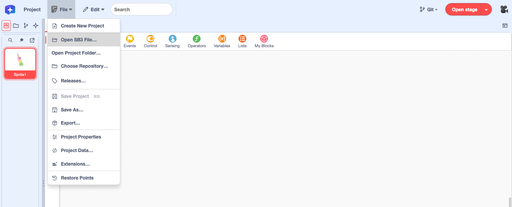
1.2 Open the stage
Click ▾ next to Open stage and choose Show in the drawer. Click the green flag above the stage on the right while keeping the code in view. Change 20 to 40 in the blue block and the ball moves twice as far per click. The same menu has Show in a separate window if you want more room for the stage.
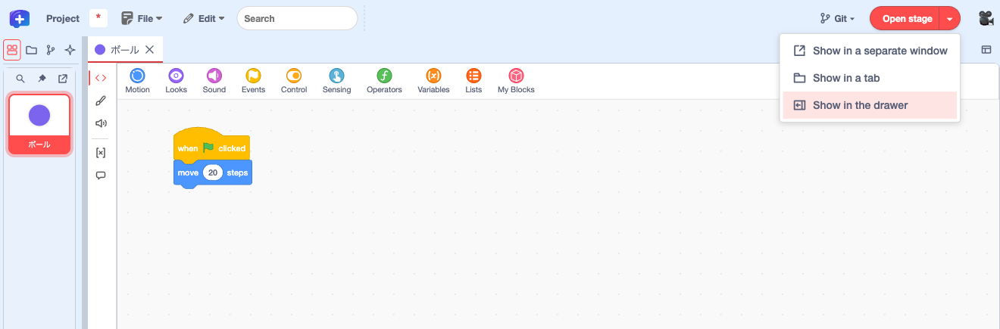
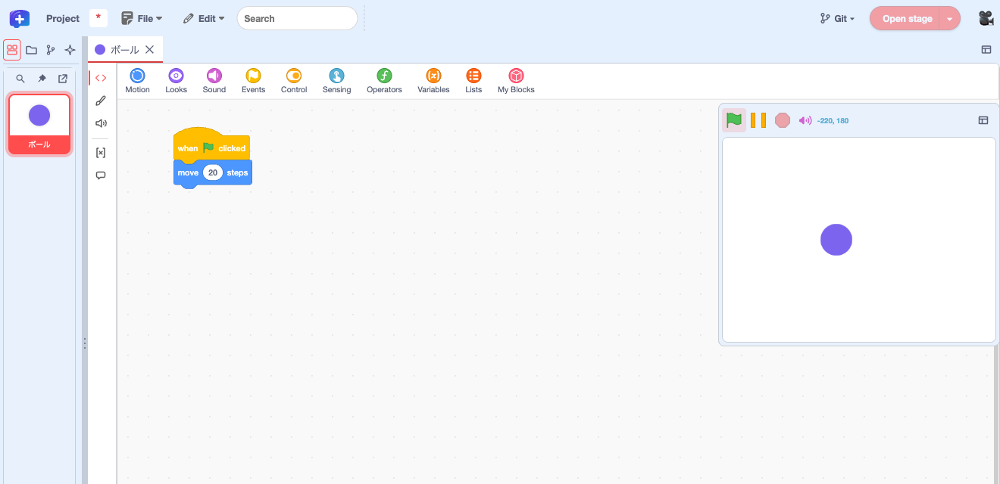
1.3 Use the sprite list on the left edge
Open Ball Demo Plus.sb3 for this exercise and the sections that follow. The sprite list has moved from below the stage on the right in Scratch to the left edge. If another drawer view is open, click the leftmost Sprites icon.
Drag the divider between the list and the editor to adjust the width. A wider list fits more tiles per row when you have several sprites. Use the pin (Pin sprite list) to keep the list visible. With the pin off, the drawer folds away when you move the pointer out. Move back to the left edge to reveal it.
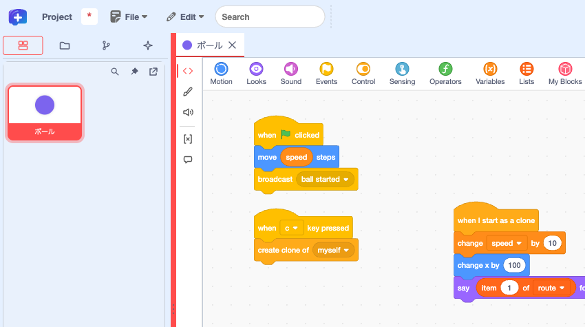
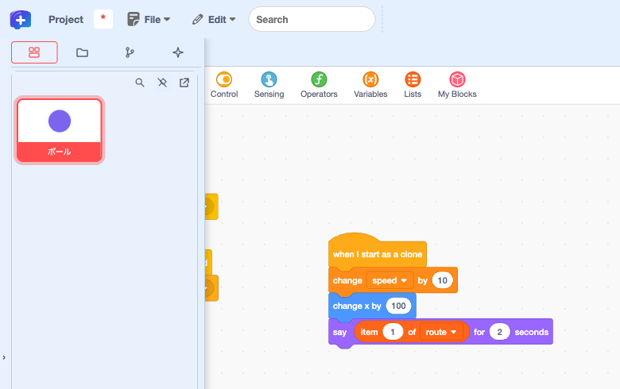
Click Undock sprite list next to the pin to put the list in its own window. If the editor remembers a separate window that is no longer open, the same control reads Reopen in another window. You can still select a sprite from there. Use the button at the top right of the separate window to dock the list again.
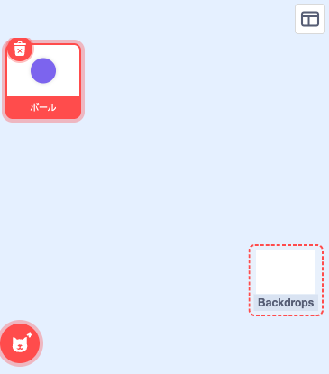
1.4 Open sprites and backdrops in tabs
Select a sprite or backdrop from the list on the left to open it in a tab above the editor. With ボール (Ball) still open, select Backdrops at the bottom of the list. Keep both tabs open and click either one to switch between them. You can also split the editor to work with tabs side by side.
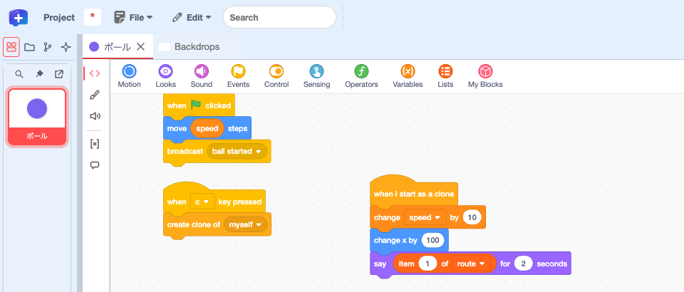
1.5 Switch editing views with the buttons
The buttons down the left side of each editing pane are Code, Costumes, Sounds, Properties & Variables, and Messages. The [x] icon opens Sprite Properties and Variables. For the stage, the left side includes Backdrops and Global Variables. Hover over an icon to see its name. Costumes and Sounds show their own headings above the editor.
Select the brush icon to edit the purple ball costume. Select the speaker icon to see sounds for that sprite. The demo’s sound list is empty. Select Code to return to its blocks.
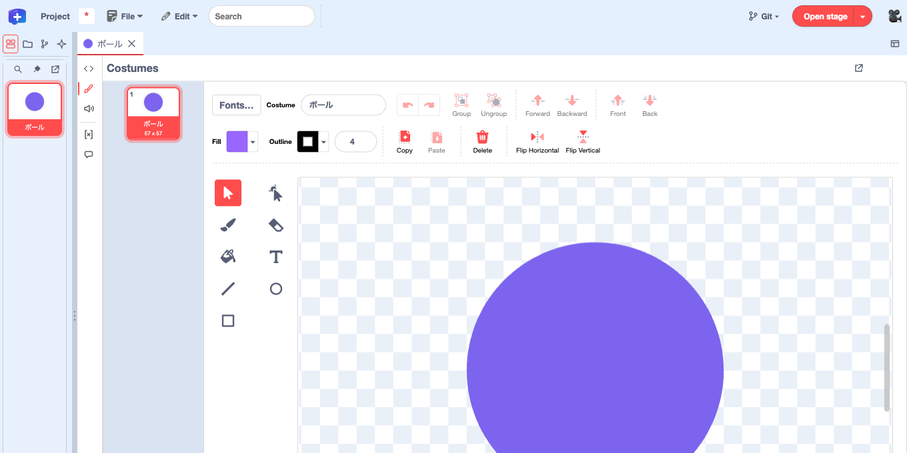
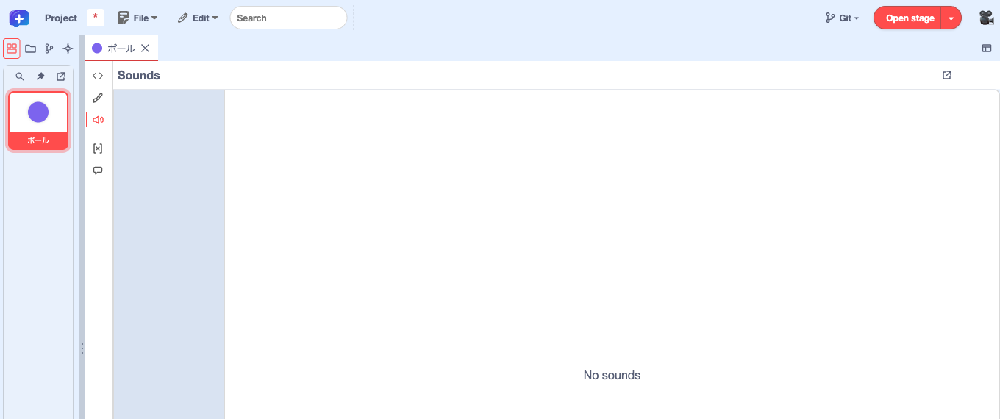
2. Work with sprite properties and variables
2.1 Set position, visibility, and direction
In the Ball tab, click the [x] icon on the left to open Sprite Properties and Variables. At the top you can edit the name, x and y, size, and direction. Use the eye icon to show the sprite and the crossed-out eye to hide it. Open the stage to see your changes. Collapse the stage drawer when it covers controls on the right.
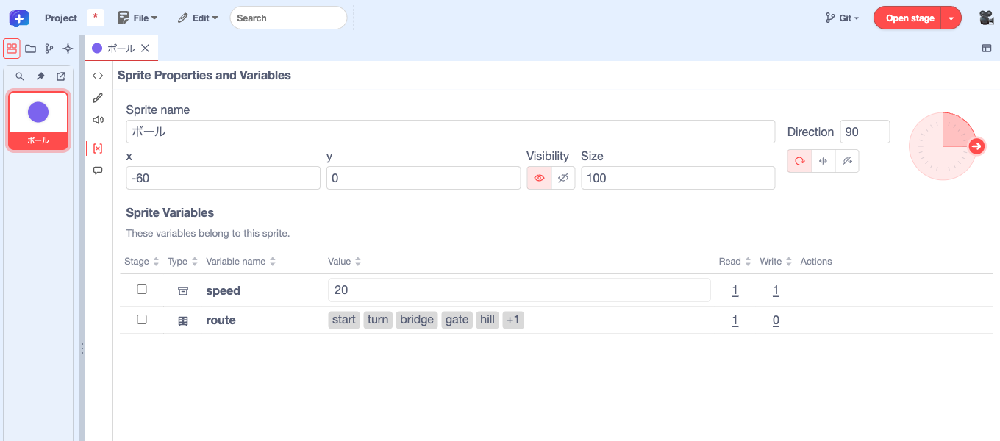
Drag the arrow around the direction dial from right (90°) to up (0°). The ball is round, so click the flag to see the difference. It now moves up. You can enter a direction in the number field as well. The three buttons below it set the rotation style to all around, left-right, or don’t rotate. Before the next exercise, return the direction to 90 and position to x = −60, y = 0.
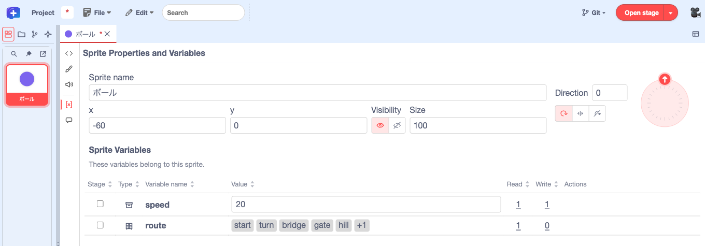
2.2 Change a variable and show the blocks that use it
The Sprite Variables table shows the variables and lists that belong to Ball. Change speed from 20 to 40, then press Enter. Click the green flag to see how far the ball moves. Set speed back to 20 for the next exercises.
Click the 1 in the Read column for speed. The search opens with the block that uses the value. Select the result to show move … steps in the green-flag script. Click the 1 in Write and select the result to show the block that changes the clone’s speed. Hover over a variable row to reveal its rename and delete controls.
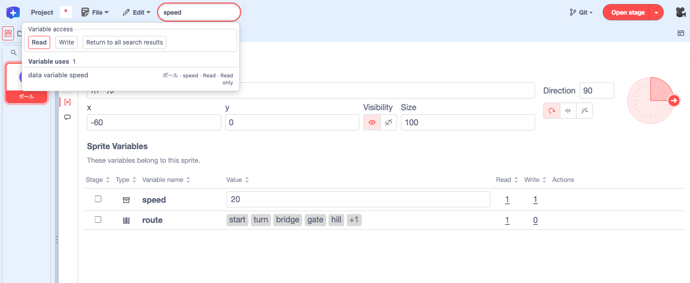
For values shared across the project, select the Backdrops tile at the bottom of the sprite list and open Global Variables. Check the Stage box on the rounds row to display the live value on the stage.
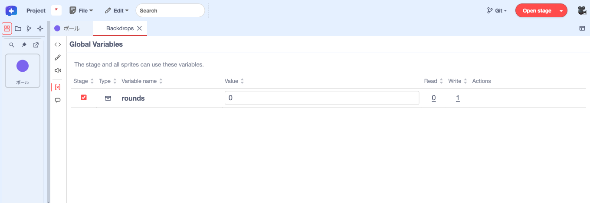
2.3 Edit a list in one place
Return to the Ball tab and open Sprite Properties and Variables.
The Type column shows a box icon for variables and a table icon for lists. Click a column heading such as Type or Read to sort the table. The route list holds the words the clone can say. The table shows the first five entries and +1 for the sixth.
Hover over the route row and click Edit.
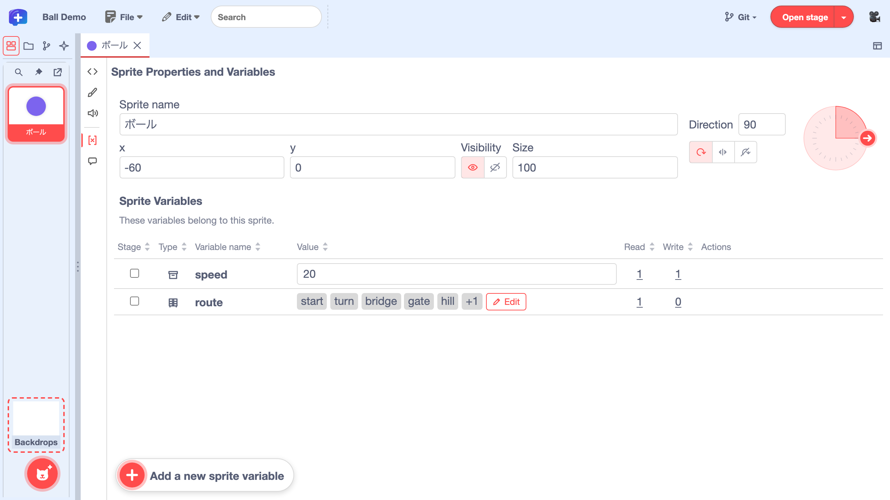
Change the first item from start to checkpoint. Click the up arrow beside bridge to move it from third to second. Use the trash icon to remove an item or Add item to insert a new one. Cancel discards edits in the dialog.
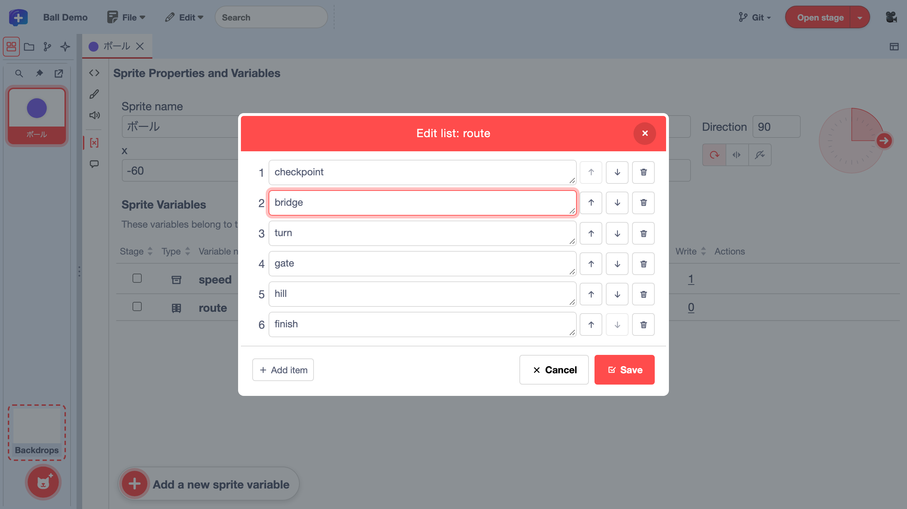
Click Save at the bottom right. The table now starts with checkpoint → bridge → turn. To keep the changes in a file, follow 4.7 Save the edited project as an SB3.
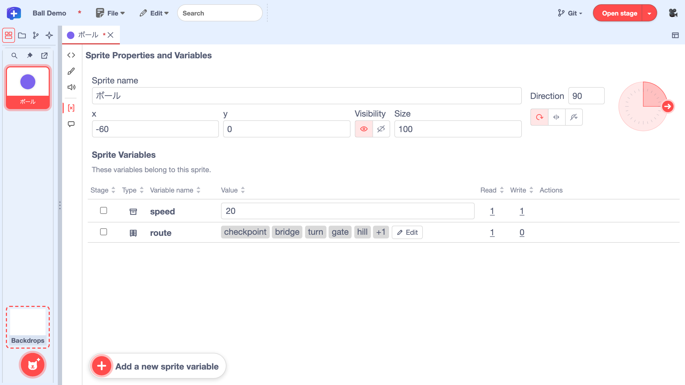
Create a list and add items
Open the panel. In the Ball tab, click the [x] icon on the left to open Sprite Properties and Variables. Click Add a new sprite variable at the bottom left.
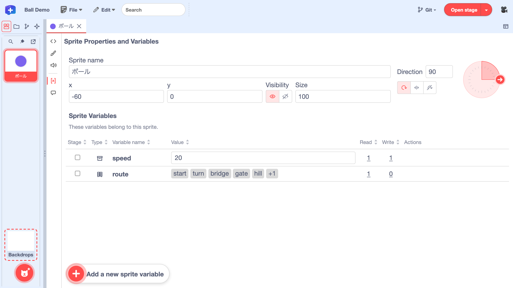
Figure 17 · The Add a new sprite variable button is at the bottom left of the Ball’s variables pane Name the list. Select the List tab, enter
Checkpointsin the name field, and click Create at the bottom right.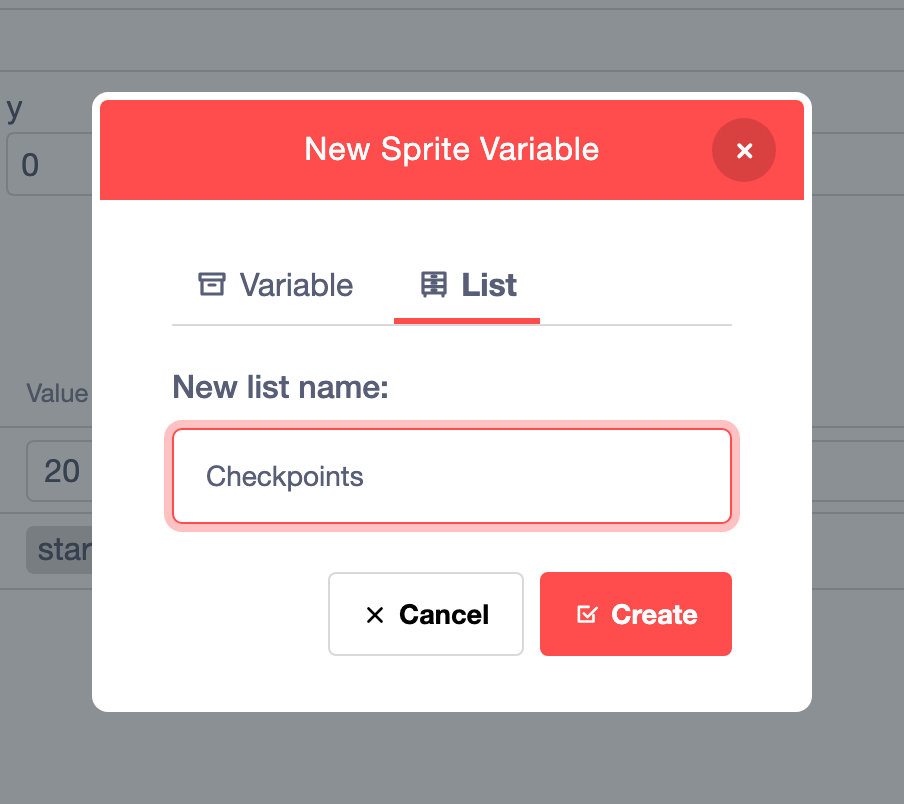
Figure 18 · The List tab is selected and Checkpoints is entered in the name field Open the empty list. Hover over the new
Checkpointsrow and click the pencil button labeled Edit.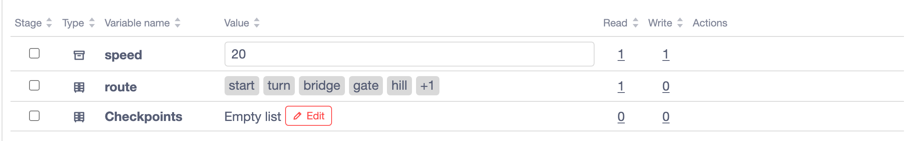
Figure 19 · The empty Checkpoints row shows its Edit button Add items and save. Click Add item at the bottom left for each new entry. Enter
Start,Bridge, andFinishin that order, then click Save at the bottom right.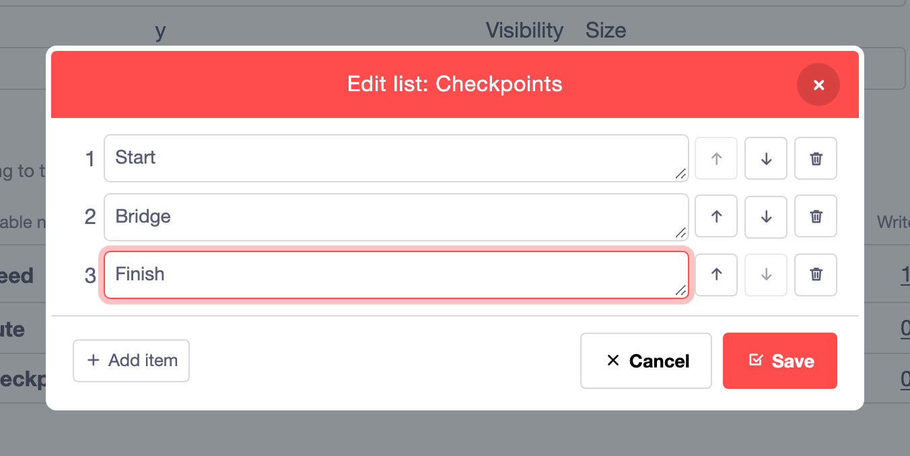
Figure 20 · The list editor shows Start, Bridge, and Finish, with Save at the bottom right Check the table. The
Checkpointsrow shows all three items in the order you entered them. To keep the edited project in a file, save it as an SB3.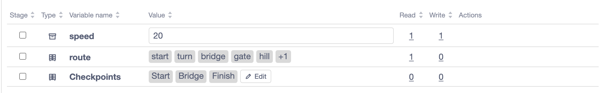
Figure 21 · The saved Checkpoints row shows Start, Bridge, and Finish


To make a list shared across the project, start from Global Variables in the Backdrops tab.
2.4 Inspect and edit individual clones
Keep the Ball tab open and show the stage in the right-hand drawer, as in 1.2. Click the white stage once and press C. A second ball appears on the right. A clone is a copy of a sprite created while the project runs. When this clone starts, it adds 10 to its own speed and says the first item in route for 2 seconds. If you edited the list in 2.3, the speech bubble reads checkpoint.
Open Sprite Properties and Variables and choose 1 at the right of the heading. The panel shows Editing clone 1, and the clone’s speed reads 30. Set it to 35, then switch back to Original sprite, where the value is still 20. You can also inspect and edit the clone’s position and list. Changes to individual clone values and properties apply to the current run. With six or more clones, use the numbered list or the left and right arrows to switch between them.
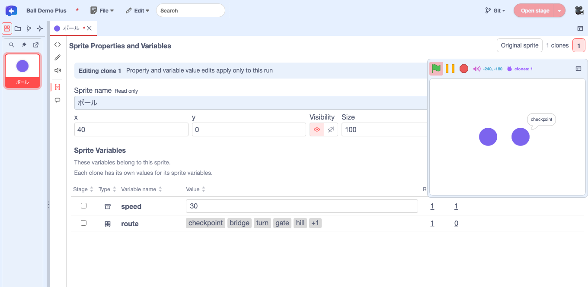
3. Follow broadcasts through the project
3.1 Open the block that receives a sprite’s broadcast
Click the speech-bubble icon Messages on the left of the Ball tab. Sent and Received show how the current sprite uses each message. After moving on the green flag, Ball broadcasts ball started. The Block column shows the broadcast and the block that starts its script. Click the underlined ball started to switch to the code and show the broadcast block.
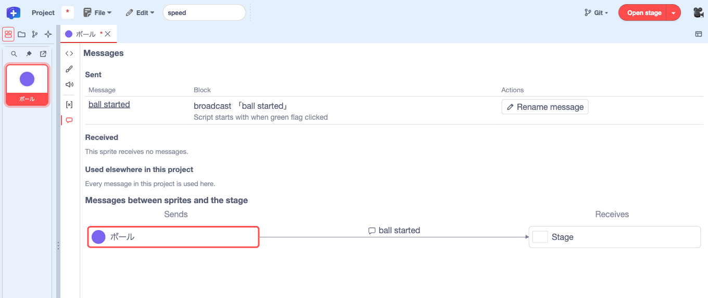
To open the receiving block, open Ball’s Messages panel again and click Stage at the end of the arrow in the diagram at the bottom. When the Backdrops tab opens, click Messages on its left side, then click the underlined ball started in the Received list. The code pane opens at the receiving block of the script that changes rounds by 1.
3.2 Follow an arrow to the receiver and see the whole project
In the diagram below the lists, each arrow points from sender to receiver. The message name sits above the arrow. A thick border marks the current target. Here, the arrow from ボール to Stage carries ball started.
The Messages panel in the Backdrops tab shows the stage’s Received list and a diagram of all broadcasts across the project.
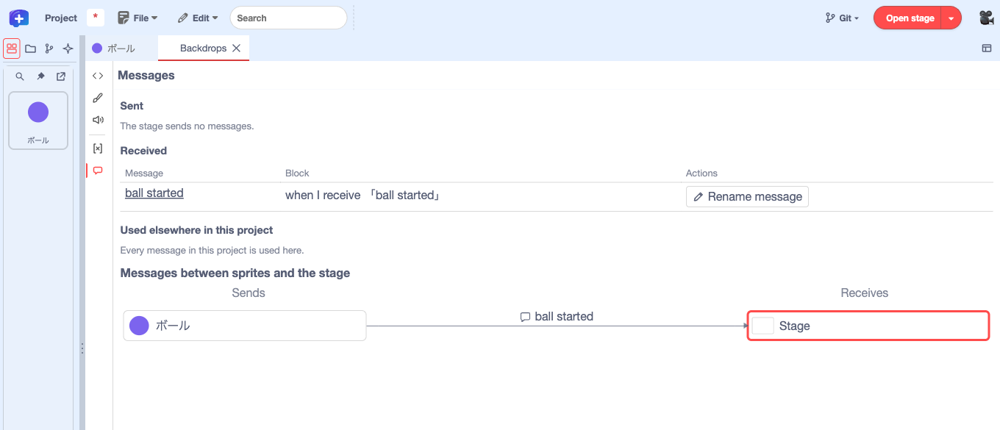
3.3 Rename a message throughout the project
Click the Rename message pencil on the ball started row. Enter ball moved, for example, and click Rename message to confirm. Messages are shared across the project, so the name changes in both the sending and receiving blocks. To see the new name in the diagram, switch to Code and reopen Messages. Choose Cancel to discard an edit before confirming.
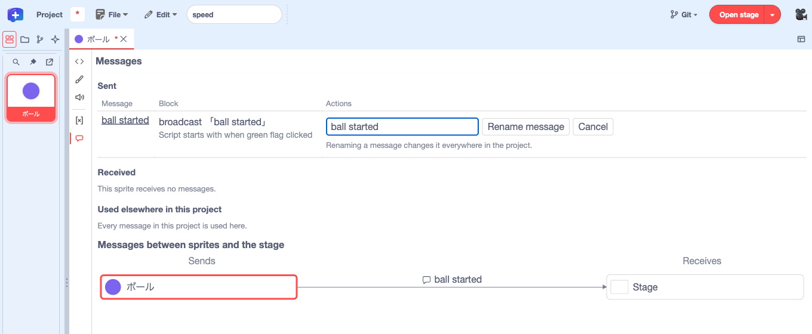
4. Find, arrange, and reuse code
4.1 Edit blocks efficiently with the palette and search
Click a category such as Motion above the code. Its block palette opens beneath the category. Drag a block from it into the code area. Resize the palette using the handle at its bottom right, then scroll down the block list. The browser saves the size per category, and the editor remembers each category’s scroll position while you work. Switch to Looks and back to Motion to pick up where you left off.
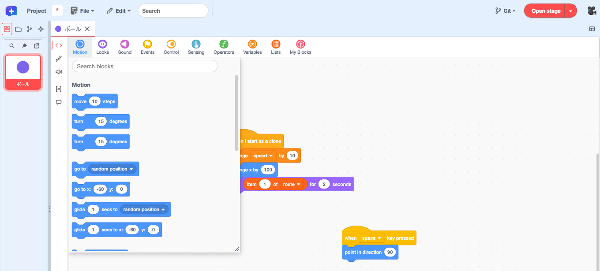
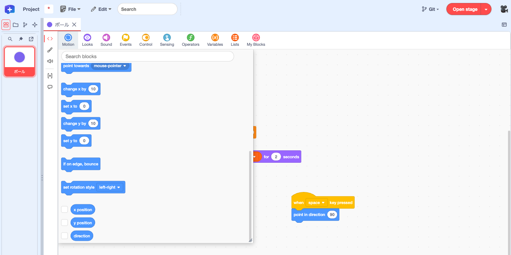
Search inside the palette to find blocks to add from that category. Use the search box in the main menu bar to find blocks already in your project. In the original Ball Demo, enter move, then select move 20 steps to show that block in the code pane.
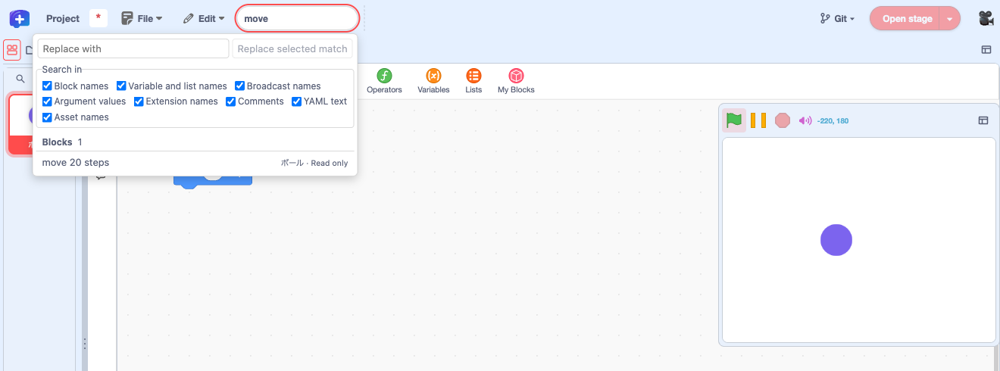
4.2 Navigate with the code minimap
Move the pointer over the code pane to reveal the minimap at the bottom right. It shows how the scripts for the current sprite are arranged. Its outline marks the area you’re looking at. In Ball Demo Plus, look for the green flag, C key, clone start, and space-key scripts.
Click a point on the map or drag its outline to move around the workspace. Use − / + below it to zoom. In a larger project, you can see which way to go to reach code outside your current view.
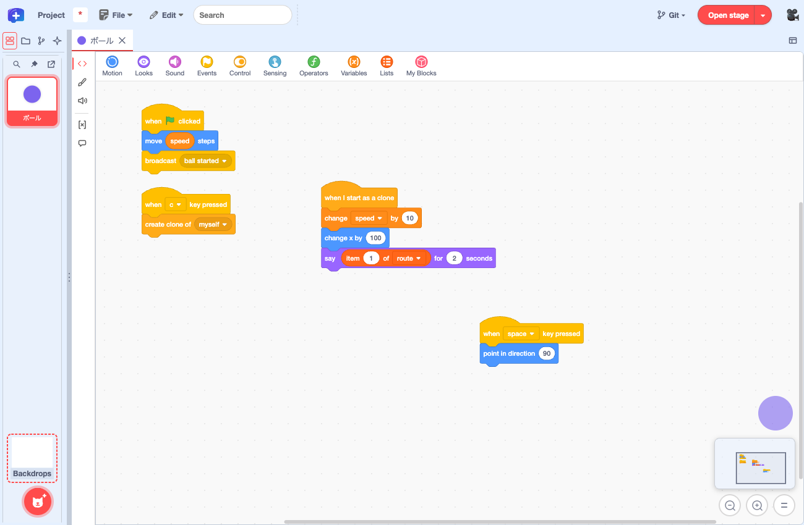
4.3 Read scripts in Z or N order
Right-click empty space in the code area and open Change code layout view. Z layout reads the original positions by row, left to right. N layout reads them by column, top to bottom. Both display the scripts in a vertical sequence so you can read through them. A check mark shows the current view. Choose Normal layout view to return to editing the scripts at their original positions.
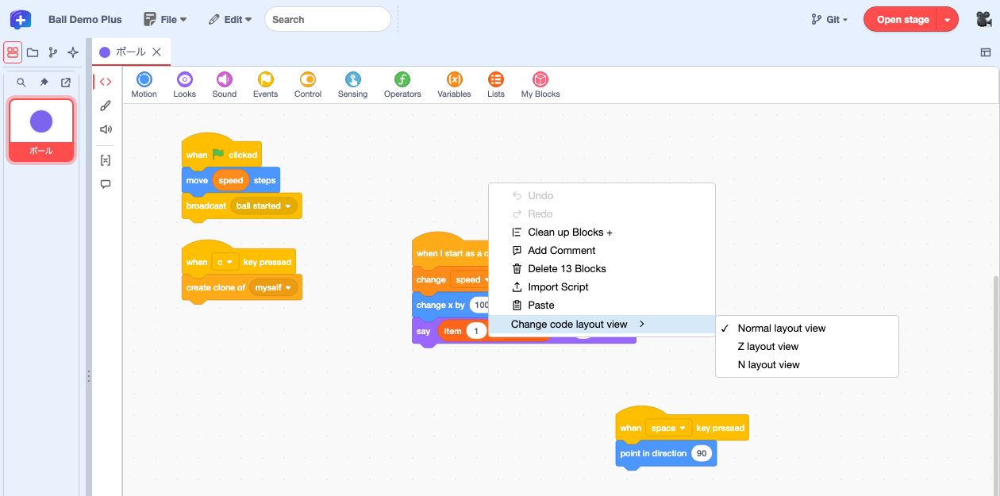
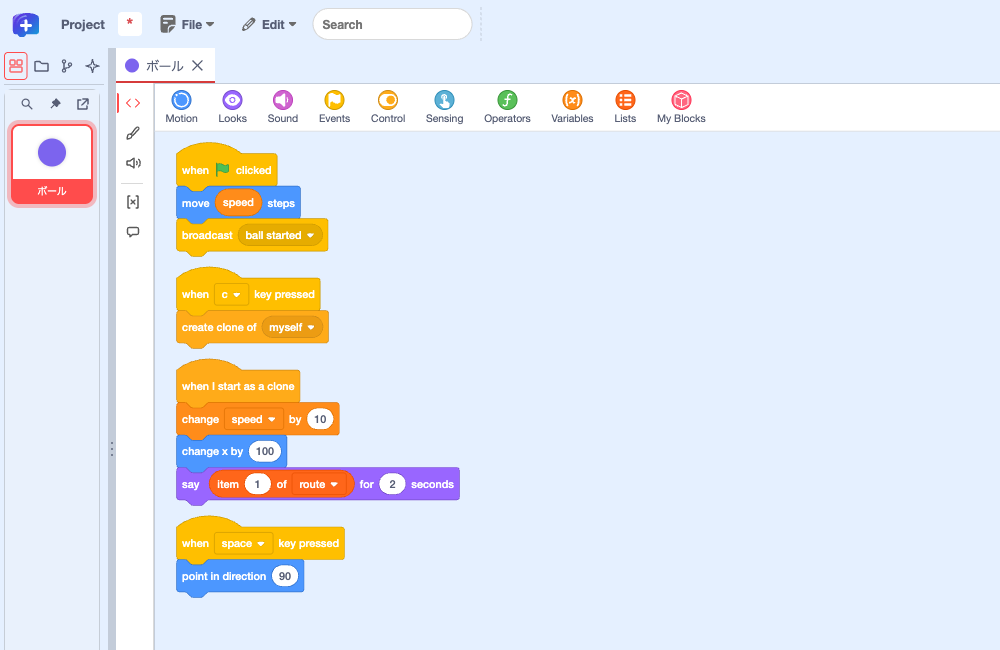
To move the scripts to new positions, return to Normal and choose Edit → Rearrange Code Blocks. Pick an order and direction to preview the positions. Click Rearrange to apply them.
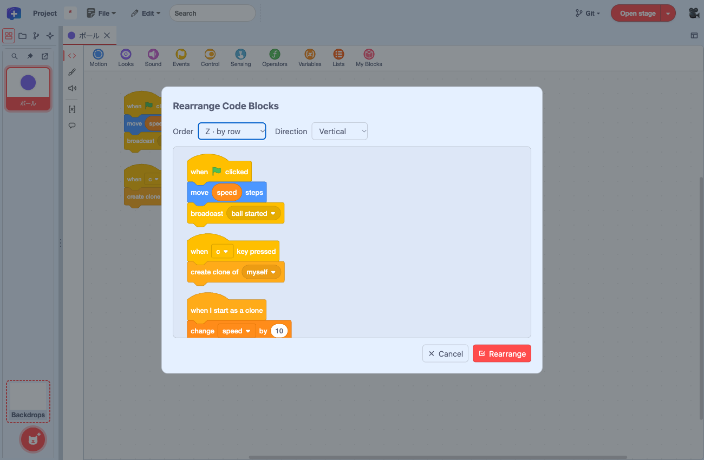
4.4 Split the editor to work side by side
At the top right of the code pane, choose Editor panel layout → Split right. You now have two views of the same sprite. Edits appear in both, and each pane scrolls and zooms independently.
In a larger project, keep your setup script in view on one side while working on an event script on the other. To close a pane, use its Editor panel layout → Close this split.
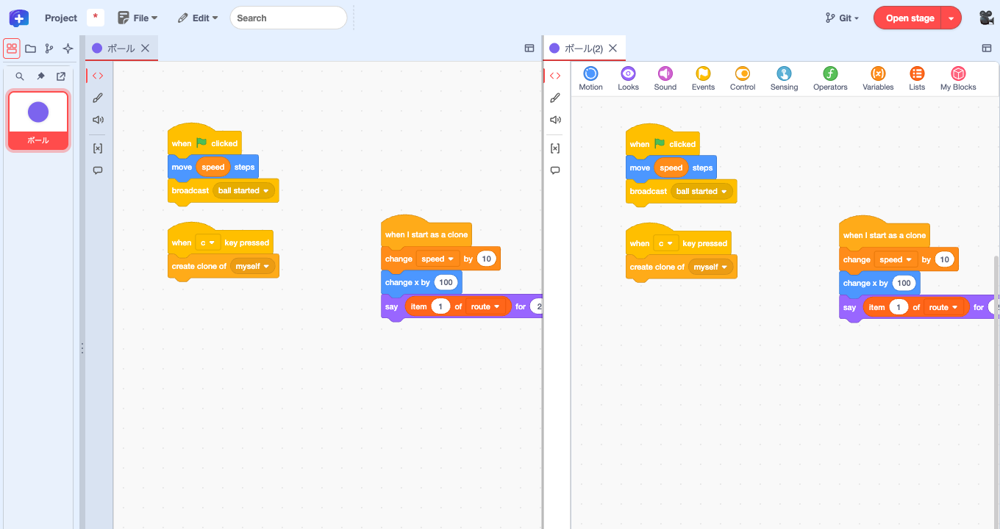
4.5 Copy a script from one tab to another
Right-click the Ball tile in the sprite list and choose duplicate to make ボール2 (Ball 2). In the original Ball tab, right-click the script that starts with when space key pressed and choose Copy. Switch to the Ball 2 tab, and open its code. Right-click an empty spot in the code area and choose Paste. The connected stack is added to the destination. The duplicate starts with one copy of the script, so you’ll have two after pasting.
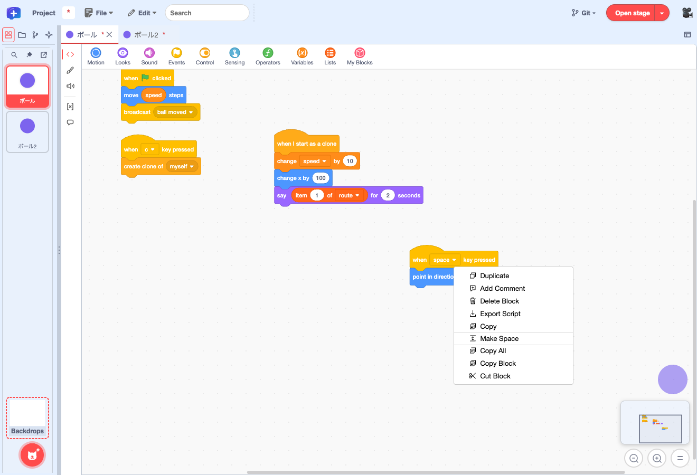
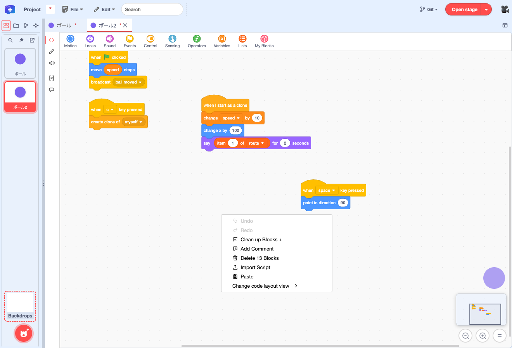
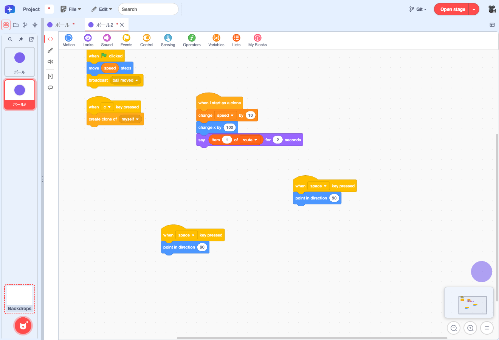
4.6 Drag a script to another sprite
You can also copy a script directly from the code area to another sprite in the same project.
- Open the sprite list on the left and return to the original ボール tab.
- Grab the yellow block at the top of the space-key script. Start on the block label, clear of the key dropdown. Drag to the ボール2 tile in the sprite list and release when the tile reacts.
- Open the ボール2 tab at the top to see the copied stack. The original tab still has its script.
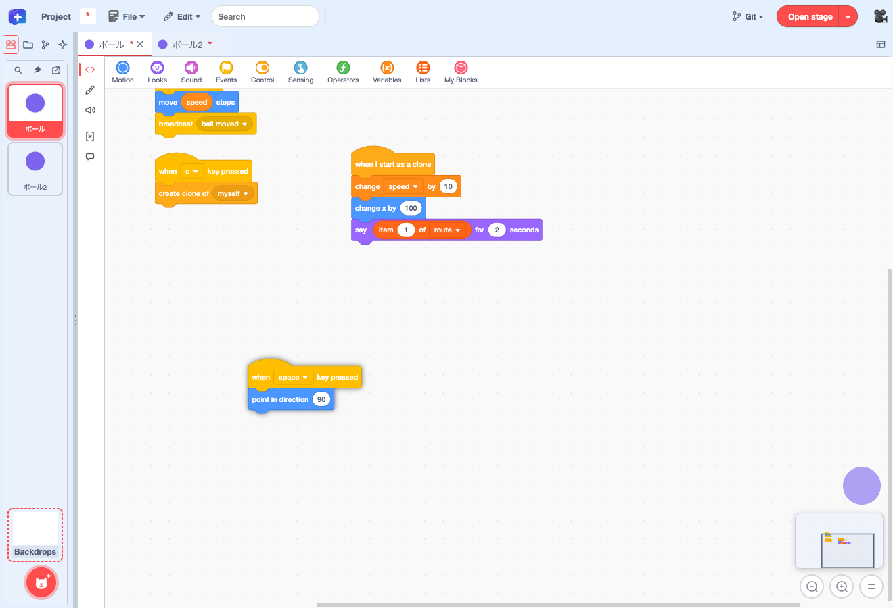
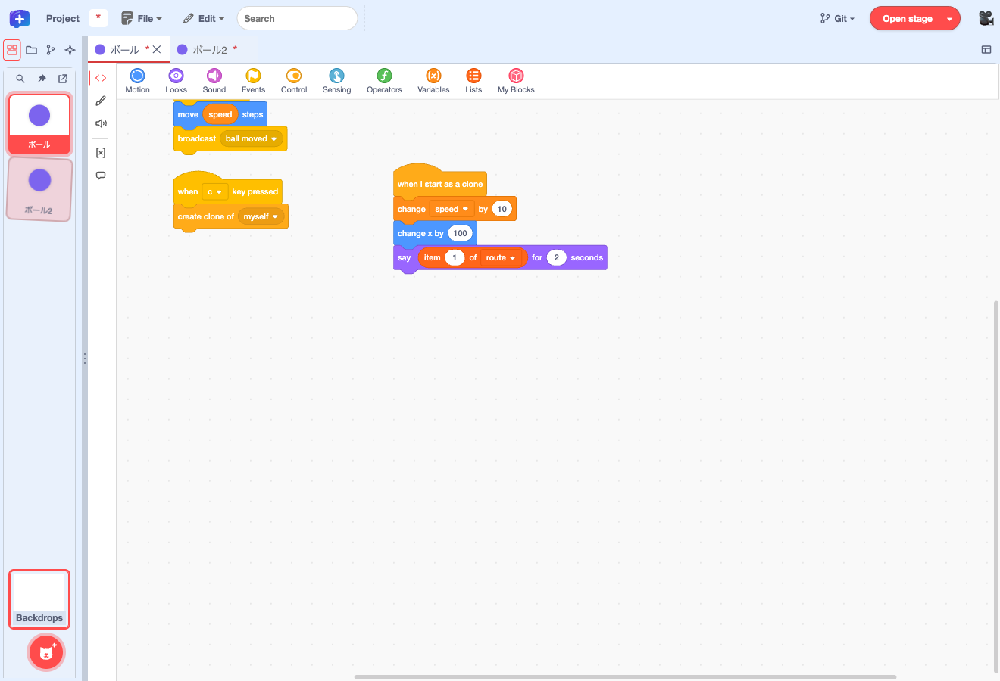
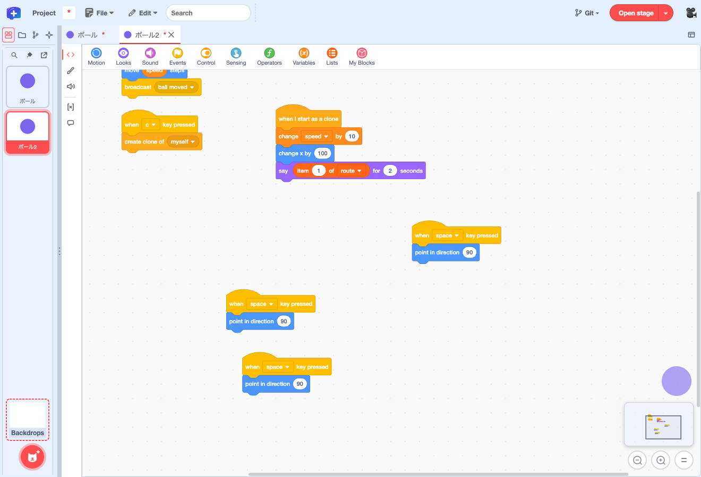
When you split the editor as in 4.4 and show a different sprite’s code in each pane, you can also drag a script from one pane onto the code in the other pane to copy it.
4.7 Save the edited project as an SB3 file
When you finish editing, you can save your project as an SB3 file. Choose File → Save As… and enter a project name in Name. Under Save format, select SB3 (current storage settings), then click Choose Where to Save… at the lower right.
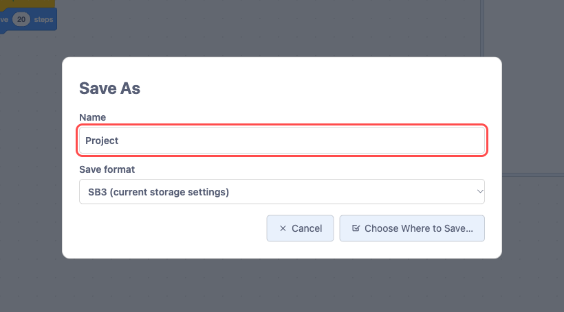
Where to go next
These guides cover saving projects in folders and working with GitHub.